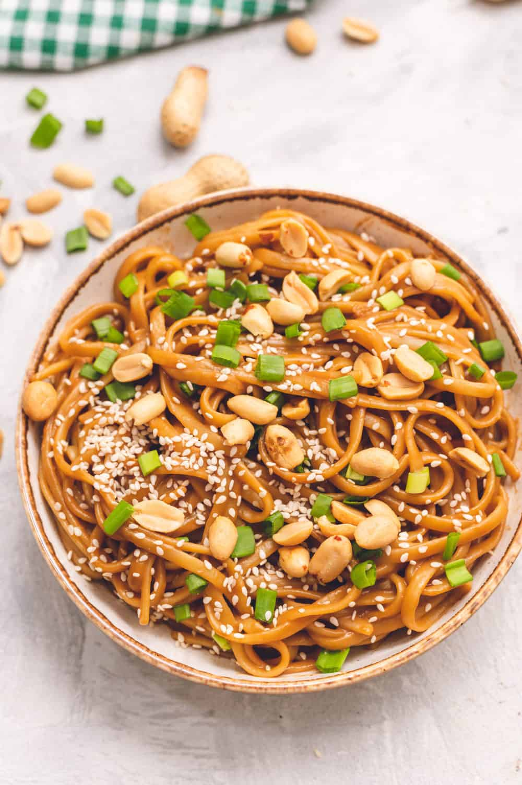

Thai Peanut Noodle Recipe
Thai peanut noodles are a flavorful and popular dish in Thai cuisine. The dish typically features cooked noodles that are coated in a rich, savory peanut sauce made with ingredients like peanut butter, soy sauce, lime juice, and chili flakes. Vegetables like carrots, peppers, and onions are often added for crunch and additional flavor.
Ingredients
- 8 oz whole wheat spaghetti or soba noodles
- 2 tablespoons vegetable oil
- 2 cloves garlic, minced
- 1 tablespoon ginger, minced
- 1 red bell pepper, sliced
- 1/2 onion, sliced
- 1/4 cup low-sodium chicken or vegetable broth
- 2 tablespoons low-sodium soy sauce
- 2 tablespoons rice vinegar
- 2 tablespoons peanut butter
- 1 tablespoon honey
- 1/4 teaspoon red pepper flakes (optional)
- 1/4 cup roasted peanuts, chopped
- 2 tablespoons fresh cilantro, chopped
Steps
- Cook noodles according to package instructions.
- While the noodles are cooking, heat oil in a large skillet over medium-high heat. Add garlic and ginger and sauté for 1-2 minutes, until fragrant.
- Add sliced bell pepper and onion and cook for another 2-3 minutes, until the vegetables are tender.
- In a small bowl, whisk together broth, soy sauce, rice vinegar, peanut butter, honey, and red pepper flakes (if using).
- Add the sauce to the skillet with the vegetables and stir to combine. Cook for 1-2 minutes until the sauce is heated through and slightly thickened.
- Drain the cooked noodles and add them to the skillet with the sauce and vegetables. Toss to combine.
- Garnish with chopped peanuts and cilantro, and serve hot.
Return to top
Return to main page